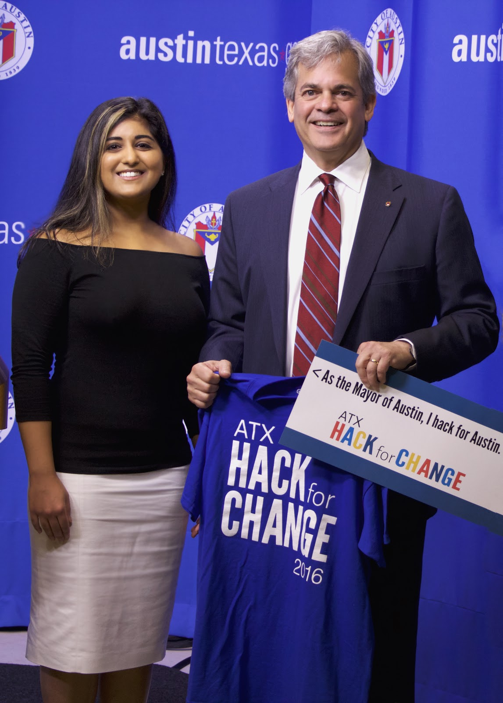

About

I currently live in Austin, Texas, but consider my a global child.
Born in Pakistan and raised in both the U.K. and California, my life goal has always
been to simply change the world for all people.Whether I was walking around my childhood neighborhood collecting large phonebooks for recycling
to starting my own rainforest club when I was 11 to save a crocodile I’d fallen in love with; I’ve strived to leave this world better than I found it.
With a background in biology, I’ve dabbled in engineering research to environmental nonprofit work to now human-centered business design.
There needs to be a tremendous surge of creativity on a global scale for meaningful change and it all starts with playfulness.
And I’m here to play.
been to simply change the world for all people.Whether I was walking around my childhood neighborhood collecting large phonebooks for recycling
to starting my own rainforest club when I was 11 to save a crocodile I’d fallen in love with; I’ve strived to leave this world better than I found it.
With a background in biology, I’ve dabbled in engineering research to environmental nonprofit work to now human-centered business design.
There needs to be a tremendous surge of creativity on a global scale for meaningful change and it all starts with playfulness.
And I’m here to play.